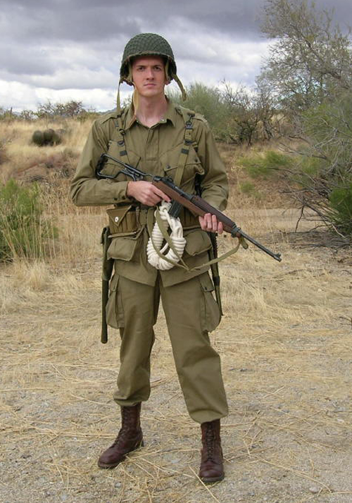
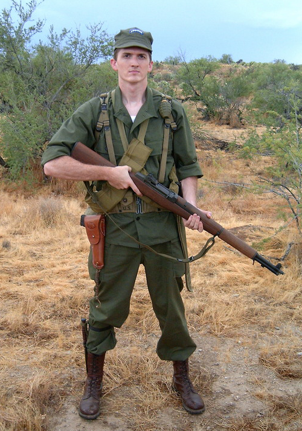
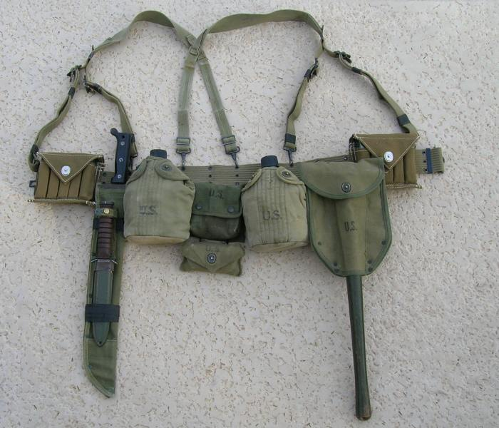

Here are full-color reconstructions of the uniforms, weapons and gear utilized by US Army paratroopers in the Pacific:

This reconstruction shows a typical 503rd RCT paratrooper as he would have looked after landing on Noemfoor Island, July 1944. He is wearing an M2 airborne helmet as well as the M1942 jump suit. This suit was designed specifically for paratroopers and had many pockets for carrying extra gear. He is armed with an M1A1 Carbine, which featured a folding stock to make it more compact and easier to jump with. In the center of his belt is a length of "let-down" rope, designed to help the trooper get down from a tree, should he be unfortunate to land in one. He is also wearing standard-issue paratrooper boots, which are taller than standard-issue infantry boots. (Author's collection)

This reconstruction shows a typical 11th Airborne paratrooper as he would have looked during the fighting on Luzon, February 1945. Instead of a helmet, he is wearing a fatigue cap; note the "AIRBORNE" tab sown on the front for esprit de corps. Unlike his counterpart on Noemfoor, this trooper is wearing standard fatigues, which were worn by all American soldiers serving in the Pacific. Although featuring fewer pockets than the M1942 jump suit, the fatigues were more durable and had a darker green color, which provided better camouflage in the jungles of the Philippines. He is armed with an M1 Garand rifle, the standard-issue rifle for the US military in World War II, as well as an M1911A1 .45 automatic pistol. He is also wearing paratrooper boots, with an M3 trench knife attached to his right. (Author's collection)

This image shows the typical gear carried by paratroopers in the Pacific. It consists of an M1936 pistol belt with M1936 suspenders attached. From left to right, we see rigger pouches made to carry extra M1A1 Carbine magazines, a machete with an M3 trench knife taped to the scabbard, an M1910 canteen, a jungle first aid kit with an attached standard first aid kit, another canteen, an M1943 E-tool (a folding shovel design copied from the Germans), and another set of rigger pouches. (Author's collection)